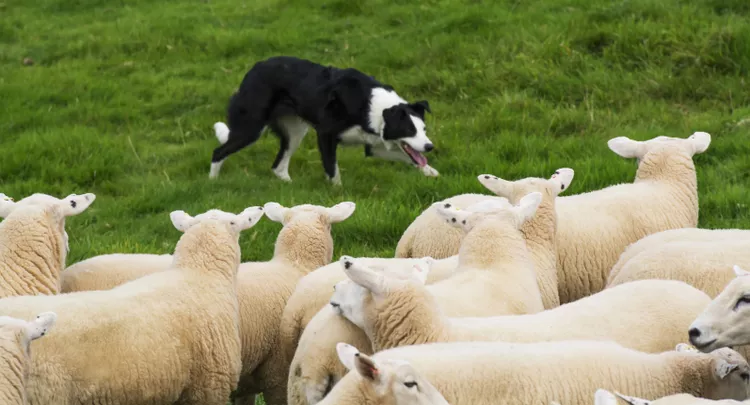

Dogs have an inifinite amount of love and loyalty to give. Especially their adored pet parents. They will anxiously await your return from work each day, and greet you with excited tail-wags and a tippy tappy dance to celebrate walking in the door. Dogs can bring so many great things to our lives.
Aside from the personal benefits dogs can provide, they are also amazing at a variety of jobs to further help humans accomplish jobs that we can't do, or would be much harder for us to do on our own. Many working dogs acquire their jobs because of their size, speed, temperament, and amazing sense of smell.

| Service Type | Typical Breed | Time to Train |
|---|---|---|
| Service and Assistant | Labrador Retriever | 1.5 years - 2.5 years |
| Herding | Border Collie | 6 months - 1 year |
| Livestock Guardian | Great Pyrenees | 2 years |
| Sled Pulling | Siberian Husky | 6 months - 1.5 years |
| Police K-9 | German Shepherd | 3 months - 6 months |
| Police Scent Detection | Belgian Malinois | 6 months - 2 years |